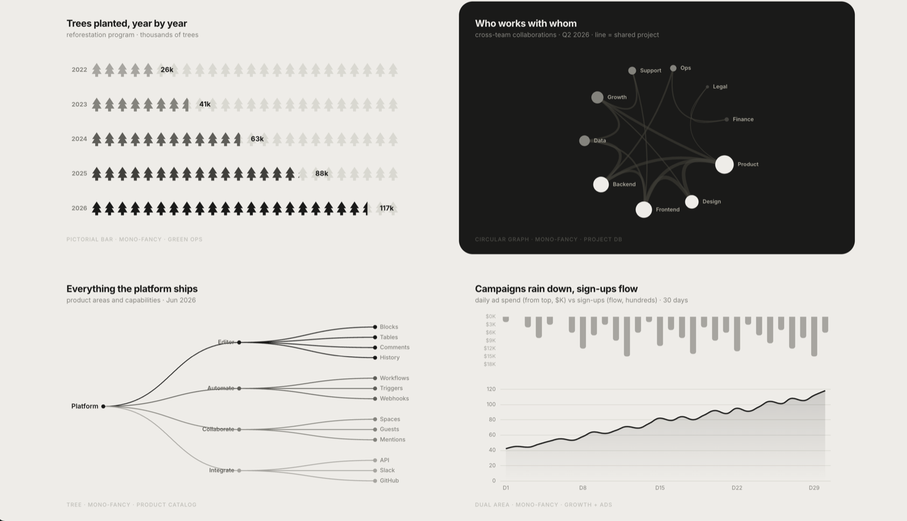
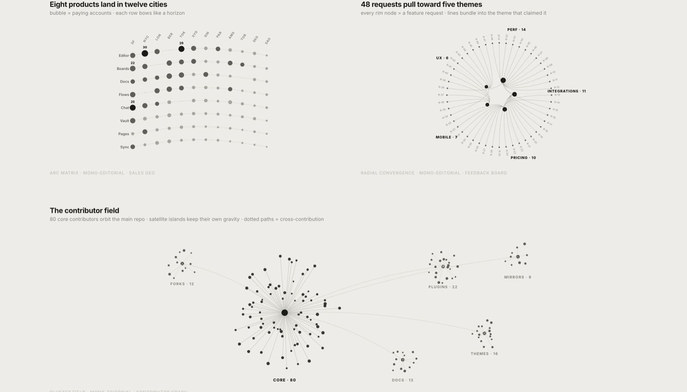
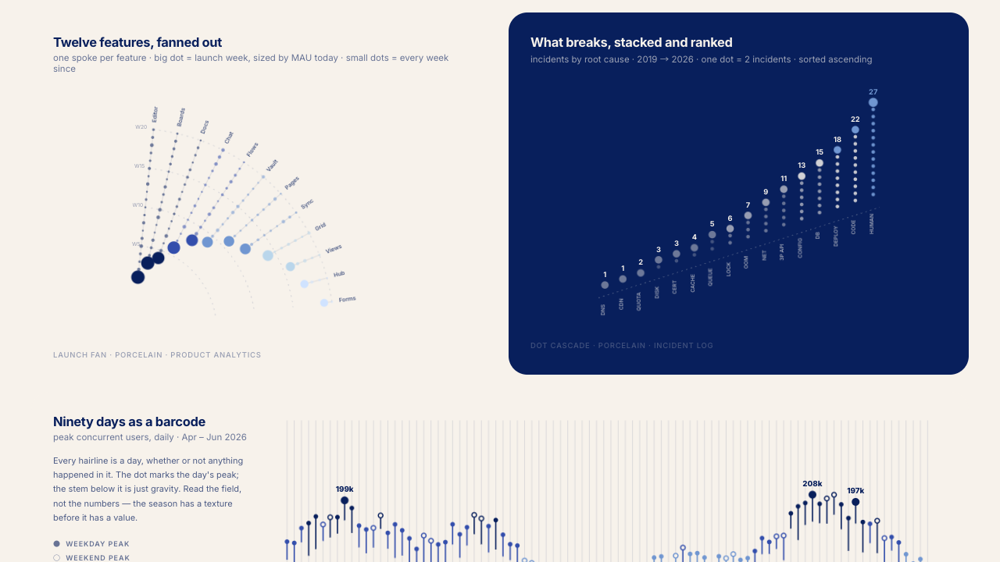
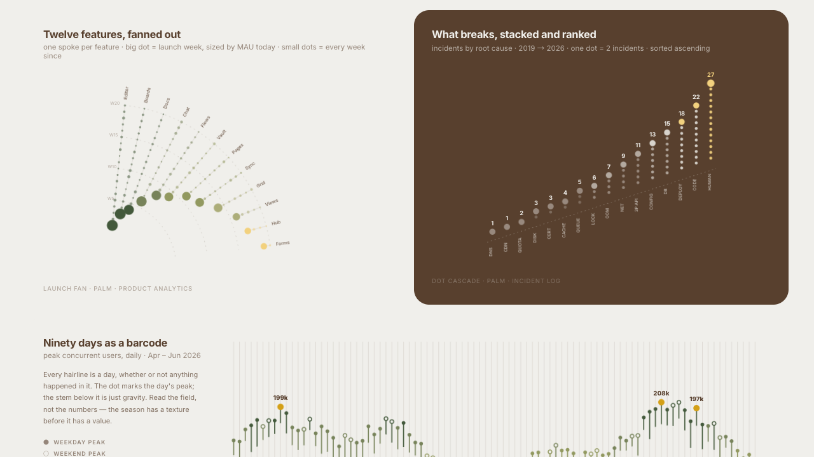
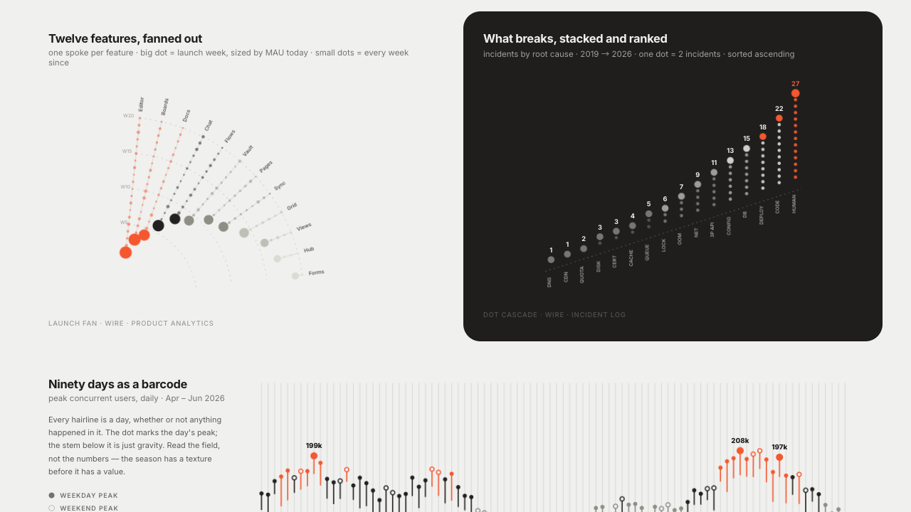
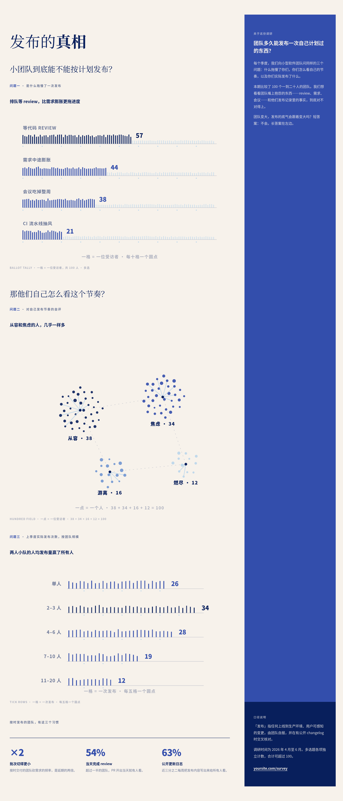
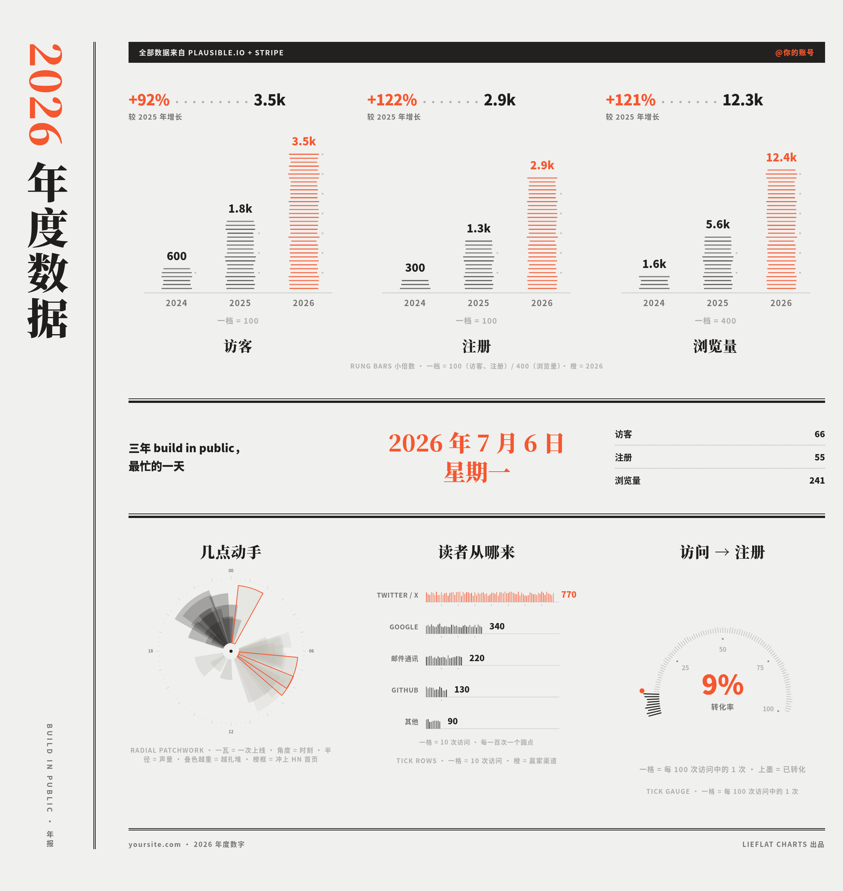
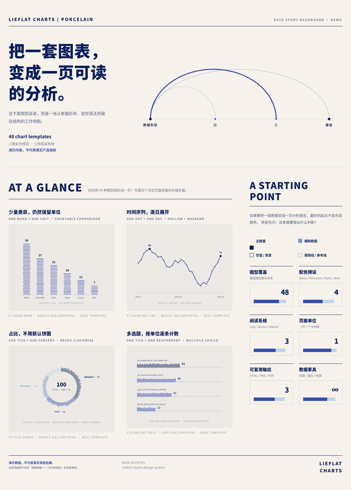

数据可视化
Agent Skill
63 张图表
12 套报告
Lieflat Charts 深度研究报告
图表类型全景解析 · 场景选型决策指南 · 视觉语法体系拆解
⭐ 5.8k+ GitHub Stars
📦 开源项目
🏢 由 moxt.ai 制作
📅 研究日期：2026-10-02
01 项目概览与核心定位
Lieflat Charts 是一套遵循 Agent Skills 格式的数据可视化与报告生成 skill，可供 moxt、Claude Code、Codex 及其他兼容 SKILL.md 的 AI Agent 使用。它不是传统的图表库，而是一套模板驱动的「图表品味法典」——以统一的字体、留白、线条和动效建立自己的视觉语法，让 AI Agent 能产出具有杂志级编辑感的图表。
核心差异点：大多数 AI 图表工具从"模板好看吗"出发，而 Lieflat Charts 先识别数据形状和阅读速度，再选择图族，并为每张图分配一个独立结论。标题、来源、旁注、留白和动效都是可视化的一部分。
核心数字
| 类别 | 数量 | 说明 |
|---|
| 图表模板总数 | 63 张 | 覆盖 Lupi、Glance、Basics、地图、交互大图五大类 |
| 报告模板 | 12 套 | 中英文双版本，覆盖调研、财报、运营、个人记录等场景 |
| 视觉风格 | 3 系 | Lupi（编辑叙事）、Glance（快速判断）、Basics（基础编辑） |
| 色彩系统 | 4 套 | Mono（保底）、青瓷蓝、椰林绿、编辑部红 + 自定义 |
| 渲染引擎 | 3 种 | 手写 SVG（主力）、ECharts、Chart.js |
选型优先级硬约束
Lieflat Charts 有严格的选型顺序，这是它的核心设计哲学：
第 1 优先
Lupi Editorial（L1–L19） — 编辑叙事型，默认首选，适合年报、长文、故事页
第 2 优先
Lupi Basics（F1–F17） — 基础编辑型，数据稀疏或熟悉图型时选用
第 3 优先
Glance（G3–G22） — 快速判断型，仅当前两者都不适配，或用户明确要求 dashboard/周报/三秒快读时才用
特殊启用
Maps（M1–M2） — 地图仅在用户明确要求"地图"或"地域分布"时启用
02 三大视觉风格体系对比
Lieflat Charts 的核心在于三种视觉语法，它们对应不同的阅读速度和使用场合：

Lupi · 编辑叙事型

Basics · 基础编辑型

Glance · 快速判断型
Lupi 编辑叙事型
19 张 · 发丝线 · 逐记录 · 30 秒阅读
- 基本单元：记录（一个点 = 一条数据）
- 线条：0.5–0.7px 发丝
- 聚合：拒绝聚合，摊开原材料
- 读法：凑近读（30s+）
- 场合：年报、长文、海报、故事页
- 引擎：手写 SVG
Basics 基础编辑型
17 张 · Lupi 语法 × 基础图型 · 30 秒阅读
- 基本单元：可数单位的基础形状
- 线条：发丝级精细
- 聚合：保留熟悉轮廓，单位可数
- 读法：30s 左右
- 场合：数据较少、结构简单时
- 引擎：手写 SVG + ECharts
Glance 快速判断型
20 张 · 粗笔画 · 提前聚合 · 3 秒读完
- 基本单元：形状（粗柱、大弧、色块）
- 线条：2px+，理直气壮
- 聚合：提前聚合好，给结论
- 读法：扫一眼（<10s）
- 场合：周报、dashboard、监控
- 引擎：Chart.js / ECharts
主力与后备的区分：主力图型是 L1–L15（Lupi）和 F1–F13（Basics），默认从这里出图。后备图型（L16–L20、F14–F17、G19–G22）只有在主力无法诚实编码数据时才用，且必须写明理由。例外是 F15、F16、F17、L17、L20 这五张——主力里不存在对应编码，命中相应数据形状时直接使用。
03 Lupi 编辑叙事型（19 张）
Lupi 是 Lieflat Charts 的旗舰系列，灵感来自数据艺术家 Giorgia Lupi 的编辑叙事风格。用细线、点阵、逐条记录和大量留白展开数据，强调真实单位、细节和旁注。
左：L1 Launch Fan（发射扇形）· 右：L2 Dot Cascade（点阵梯级）

L3 Barcode Lollipop（条形码棒棒糖）· 90 天日序列的肌理表达
主力图型（L1–L15）
L1 · Launch Fan
发射扇形图
多实体各带出生时间+当前规模
年报 / 故事页
某 SaaS 公司年报展示 12 款功能（Editor、Boards、Docs 等）从 2019 到 2026 年的上线时间和当前月活规模，扇形展开后一眼看出哪些功能上线早却规模小、哪些后发制人。数据：功能名、上线周次、当前 MAU
L2 · Dot Cascade
点阵梯级图
排名比较，可数单位（unit chart）
年报 / 故事页
某运维团队年报展示 16 类故障根因（DNS、CDN、QUOTA 等）的发生次数排名，一个点 = 2 次事故，点级联向上堆叠，读者可逐点数出"CODE 类故障今年发生 27 次"。数据：故障根因名、发生次数
L3 · Barcode Lollipop
条形码棒棒糖图
每天一个读数的日序列（90 天级）
年报 / 故事页（配文字栏）
某直播平台季度复盘展示 90 天里每天的峰值并发用户数，每根发丝 = 一天，圆点 = 当日峰值，条码纹理让"季节的质感"先于数值呈现，配文字栏标注工作日与周末差异。数据：日期、当日峰值数值
L4 · Arc Matrix
弧形矩阵图
分类×分类+量，小数据（≤100 格）
轻量矩阵
某出海公司销售地理报告展示 8 款产品在 12 个城市（SF、NYC、LON 等）的付费客户数，弯曲行让人一眼比较城市间差异，是 L9 年鉴的轻量版。数据：产品名、城市名、付费账户数
L5 · Radial Convergence
径向聚合图
多对一归属，不丢明细（≤60 条）
海报 / 封面
某 Lenny 调研报告展示 100 条"一句话形容行业"的回答收敛到 5 个主题（混乱 30、太快 17、泡沫 12 等），每条线 = 一条回答，线束汇聚到主题中心。模板演示中 48 个功能请求归属到 5 个主题。数据：逐条请求文本、归属的主题名
L6 · Cluster Field
集群星场图
中心+卫星网络，海报版
海报 / 封面（认形不查数）
某开源项目 README 首图展示 80 位核心贡献者围绕主仓库的贡献关系网络，5 个卫星团（PLUGINS 22、THEMES 16 等）保持各自引力，虚线路径标出跨贡献关系，认形不查数。数据：贡献者名、所属子模块、贡献关系
L7 · Brand Spectrum
品牌光谱图
双极量表（两端都是合法位置）+ 竞品对照
品牌调研报告
某品牌定位报告展示 4 对对立特质（FRIEND↔AUTHORITY、SERIOUS↔PLAYFUL 等），品牌自评 [.74,.80,.40,.22]，3 个竞品对照点。Lenny 案例中按职级分层展示 NPS（−49/−23/−5），色带随职级下滑左移。数据：对立特质对、品牌自评位置（0–1）、竞品对照位置
L8 · Dotty Matrix
点阵矩阵图
多组×网格×量，等距堆叠
封面 / 海报（装饰强）
某团队季度封面展示 4 个小队（PLATFORM、GROWTH、MOBILE、INFRA）在 6×6 周里每周完成的任务量，等距视角堆叠成四个平面，装饰感强但能看出哪个小队在哪周爆发。要读数则摊平用 G14。数据：组名、周次、完成任务数
L9 · Bubble Almanac
气泡年鉴图
分类×年份+量+状态，大跨度（手绘 blob）
年报（带旁注 / 大事记）
某产品八年年鉴展示 12 个产品领域 8 年来的支持工单量演变，气泡面积 = 工单数、深色核心 = 升级量、虚线环 = 仍在 beta，旁注标出关键里程碑（2020 SLA 引入、2023 GA 浪潮等）。数据：产品领域名、年份、工单数、升级数、是否 beta、大事记文本
L10 · Radial Patchwork
径向拼贴图
逐事件叠加：时刻(角)×规模(径)，透明度=密度
年报 / 故事页
某工程团队年报展示一个季度 46 次部署在一天 24 小时内的分布，角度 = 部署时刻、半径 = 改动文件数，墨迹浓处即部署高峰，3 个描边楔形标出哪几次引发了故障。数据：逐次部署的时刻（小时）、改动文件数、是否触发事故
L11 · Trend Lineage
趋势谱系图
事件序列生命史（首发/重做/休眠/存活）
产品复盘
某产品复盘中展示 10 个功能（Dark mode、Kanban、Wikis 等）从 2016 到 2026 年的命运——实心圆 = 首发、空心圆 = 重做、虚线 = 休眠年份、线延续到今天 = 仍存活。数据：功能名、事件列表（年份+类型：首发/重做）、是否仍存活
L12 · Type Colonnade
柱廊归类图
多对一归属+逐条名单（≤50 条）
治理 / 审计报告
某治理审计报告展示 44 个仓库归属到 10 个团队（PLATFORM、FRONTEND 等），每根发丝把一个仓库交给它的 owner。Lenny 案例中 100 人按 AI 身份认同归属到 5 类，取整后 98 人，底注写明"rounding ate the other two"。数据：逐条记录名（仓库/工单）、归属的团队/类别
L13 · Hourglass Stream
沙漏漏斗图
分阶段递减人数（漏斗）
年报 / 故事页
某转化漏斗报告展示 5 阶段（VISITORS 4200 → SIGN-UPS 1900 → ACTIVATED 960 → RETAINED 540 → PAYING 310），每条带宽度 = 该阶段人数。Lenny 案例中展示情绪矛盾收窄 100 → 77 → 51，1 tick = 1 人。数据：阶段名、各阶段人数（逐级递减）
L14 · Hundred Field
百人方阵图
100% 构成（占比），≤6 类小数据
年报 / 故事页
某调研报告展示 100 位受访者对某议题的 4 种态度（CHARGED 41、TORN 35、ADRIFT 12、AVERSE 12），1 点 = 1 人，100 个点按四簇排布，密度来自单位分解而非聚合。数据：类别名、占比百分比（加总 100）。单位含义必须写进副标题
L15 · Ballot Tally
选票计票图
多选题百分比（各项独立 0–100），≤6 项
年报 / 故事页
某职场调研展示 4 项恐惧（DO MORE WITH THE SAME PAY 51%、AN UNSUSTAINABLE PACE 46% 等），1 tick = 1 人，可多选。Lenny 案例中展示矛盾三联——享受工作 79、显著倦怠 56、乐观 49，三者可同时为真。数据：问题/选项名、选中百分比（各项独立，加总可超 100）
后备图型（L16–L20）
L16 · Matrix Heat 后备
矩阵热力图（细读版）
两个离散维度 × 数值，≤100 格
年报 / 产品分析
某产品分析年报展示 8 个功能两两共用的账户占比（8×8 矩阵），对角线深色块揭示哪些功能总是一起被用，虚线方框标出最强配对。轻量矩阵优先 L4，格子多到气泡挤才用 L16。数据：功能 A 名、功能 B 名、共用账户占比
L17 · Calendar Heat 直接用
日历热力图
一整年日期 × 数量，52 周 × 7 天
年报 / 运营复盘
某工程团队年度复盘展示全年 365 天每天的部署次数（52 周 × 7 天），点面积 = 当天部署数，一眼看出周末和假期的安静带、发布高峰日，虚线环标出 2025 年最忙的一天。主力无对应编码，直接用。数据：日期、当天数量（如部署次数、提交数）
L19 · Ridgeline 后备
山脊分布图
3–8 组连续分布的密度形状比较
年报 / 研究报告
某数据平台研究报告展示 5 条流水线（MOBILE、DESKTOP、API、IMPORTS、BATCH）的完成时长密度，每条山脊 = 一条流水线的时长分布形状，面积由发丝线组成、圆点 = 峰值，并排山脊让人一眼比较哪条快、哪条拖尾长。数据：组名、每条记录的连续数值（如完成时长）
L20 · Parallel Coordinates 直接用
平行坐标图
同一实体集跨 3–6 个连续维度，一线一实体
产品组合 / 研究报告
某产品组合研究报告展示 12 款产品跨 4 个维度（PRICE $、CSAT、RETENTION %、GROWTH %），一条发丝 = 一个产品，加粗的那条 = 全维度都赢的产品。主力无对应编码，直接用。维度超 6 个先筛选或拆图。数据：实体名、3–6 个连续维度的数值
小数据 Lupi 化技巧：L14–L15 是小数据组——数据只有几个百分比时，靠单位分解拿回 Lupi 密度（1 点 = 1 人 / 1 百分点）。单位含义必须写进副标题，且只摊诚实单位，不编造个体。
04 Glance 快速判断型（20 张）
Glance 系列用粗柱、大数字、色块和清晰排序提前聚合信息，让读者几秒内看懂高低、变化和异常。适合周报、汇报与 dashboard。
Glance 系列示例：象形柱状图（G5）、环形网络图（G6）、左右树形图（G7）、降雨双面积图（G8）
主力图型（G3–G18）
G3 · Chunky Bars
矮胖柱状图
少类目排名比较（≤6）
周报 dashboard
某周报仪表盘展示 6 个套餐（FREE/STARTER/PRO 等）的 MRR 排名，Chart.js 渲染，3 秒读完。多选题百分比时改用 L15。姊妹为 L2 Dot Cascade、F1 Rung Bars。数据：类目名、数值
G4 · Dot Waffle
点阵华夫饼图
100% 构成（占比）
通用，饼图的默认替代
某通用报告展示 5 个注册来源（Search 34%、Referral 27%、Social 18% 等），1 点 = 1%，替代饼图让占比可数。姊妹为 L14 Hundred Field、F4 Tick Donut。数据：类目名、占比百分比（加总 100）
G5 · Pictorial Bar
象形柱状图
逐年计数（一个符号=固定数量）
对外故事页
某对外故事页展示再造林项目 5 年种树量（2022 年 26k → 2026 年 117k），每棵树符号 = 固定数量，ECharts 渲染，堆叠让计数直观且有故事感。数据：年份/类目、数量（可整除为每个符号代表的固定单位）
G6 · Circular Graph
小型环形网络图
网络，≤12 节点
快速示意
某快速示意展示 10 个团队（Product 52、Design 38、Frontend 46 等）的跨团队协作关系，线 = 共享项目，ECharts 暗卡渲染。节点多于 15 改用 B1 大图。数据：节点名（含数值）、节点间连接（含权重）
G7 · Tree LR
左右树形图
层级结构（2–3 层）
产品目录 / 架构页
某产品架构页展示平台所有产品领域和子能力的目录树（2–3 层），ECharts 渲染。只看从属不看份额时用 G7，要看份额用 F13。数据：层级数据（父→子）
G8 · Rainfall Dual Area
降雨双面积图
双序列因果（投入 vs 产出）
增长复盘
某增长复盘展示 30 天每日广告投入（$K，从上方柱状落下）vs 注册数（折线流动），ECharts 双轴，投入"下雨"产出"汇流"。数据：日期、投入序列、产出序列
G9 · Scatter Morph
散点变形轮播
同一实体集的三个维度轮播
短视频 / 演示
某短视频演示展示 12 个产品跨价格/满意度/MAU 三视图，每 3 秒在散点图视图间用 universalTransition 变形轮播，同一批点在不同视图间飞舞。数据：实体名、3 个维度的数值
G10 · Diverging Bar
发散柱状图
有正负的分类数值
周报 dashboard
某周报仪表盘展示 7 个套餐净增减账户（Enterprise +86、Team +54、Free dormant −67 等），正右负左，3 秒看出"哪里赚了哪里亏了"。数据：类目名、带正负的数值
G11 · Force Graph
小型力导向图
中心+卫星网络，≤15 节点
快速示意，可拖拽
某快速示意展示 12 个集成（Slack 34、GitHub 30、Figma 22 等）围绕 Core API 的同步关系，节点 = 月同步数，可拖拽、网络回弹。节点多于 15 用 B2 大图。数据：节点名（含数值）、连接关系
G12 · Stagger Wave
错落波浪图
多类目分布（30–60 根）
短视频入场
某短视频入场动画展示 50 个市场的注册数，柱状按错落延迟级联入场，elasticOut 弹性动画，点击重播，视觉冲击强。数据：30–60 个类目名、各数值
G13 · Big Slice
大切片饼图
双编码：占比(角)×强度(径)
产品分析
某产品分析展示 6 个产品（Editor 34%/42min、Boards 22%/31min 等），角度 = 用户占比、半径 = 日均分钟数，大扇区且半径长 = 用户多且粘性高，虚线圈在 15/30/45 分钟。数据：类目名、占比百分比、强度数值
G14 · Single Axis
单轴打点图
星期×小时×量（punch card 数据）
支持 / 运维周报
某支持运维周报展示一周各时段的工单量（7 天 × 24 小时），每行一天、独立单轴，圆点大小 = 工单量，工作日 9–17 点最密。原 Punch Card 已删，此为唯一版本。数据：星期、小时、工单量
G15 · Jitter Strip
抖动条带图
分组分布，逐条记录（几百点）
SRE / 工单分析
某 SRE 工单分析展示 4 个优先级（P0 CRITICAL、P1 HIGH、P2 NORMAL、P3 LOW）几百张工单的响应时长逐条分布，每个点 = 一张工单，抖动让堆积点散开可读。数据：分组名、每条记录的连续数值
G16 · Bar Race
柱状竞速图
排名随时间演变
短视频
某短视频展示 8 款产品（Editor、Boards、Docs 等）2019–2026 年的 MRR 竞赛，每 1.15 秒一帧，领先者穿黑，realtimeSort 实时排序，动态演示谁后来居上。静态印刷版用 G21。数据：实体名、离散时间点、各期数值
G17 · Dynamic Stream
动态流图
实时滚动序列
直播 / 大屏
某直播大屏实时滚动展示并发用户数，每 300ms 一个新读数，窗口 50，点击重启，带 LIVE 标识，尾部标注当前值。数据：实时数值流（如并发数、QPS）
G18 · Draw-in + Counter
一笔画+计数器
累计增长（一条线+一个大数）
短视频 / 汇报开场
某汇报开场展示 2026 上半年 180 天的累计 ARR，线一笔画出、数字同步计数到 $X.XM，2.6 秒动画完成时大数定格。原 Release Rings 已删。数据：日期、每日数值（会自动累计）
后备图型（G19–G22）
G19 · Violin 后备
小提琴图
分组连续分布的密度轮廓 + 中位数
dashboard / 分析汇报
某仪表盘展示 4 个套餐（ENT 中位 1.6h、PRO 3.4h、STARTER 6.2h、FREE 9.5h）的首次回复时长密度剪影，宽度 = 该时长的工单密度，纸色横档 = 中位数，越快越黑。数据：组名、每条记录的连续数值。姊妹为 F15 Tick Box、L19 Ridgeline
G20 · Matrix Heat 后备
矩阵热力图（快读版）
两个离散维度 × 数值，≤60 格
dashboard / 产品分析
某产品分析展示 5 个版本（v2.0–v1.6）× 6 个功能（EDITOR、BOARDS 等）的采用率，明度 = 占比、每格直接标数，对角线"新版本跑得黑"，3 秒读完。细读版用 L16。数据：维度 A 名、维度 B 名、数值
G21 · Rank Strip 后备
排名条带图
多实体排名随离散时间变化
汇报 / 账单复盘
某汇报账单复盘展示 8 款产品 × 6 个季度的 MRR 排名演变，一行一产品、一格一季度，越深 = 排名越高，"可印刷的柱赛跑"——Flows 从中游爬到榜首。动态演示用 G16。数据：实体名、离散时间点、各期排名
G22 · Aggregate Sankey 后备
聚合桑基图
两端聚合流量，带宽=数量
归因 / 转化分析
某归因转化分析展示 5 个渠道（SEARCH、REFERRAL、SOCIAL 等）流向 3 个套餐（FREE、PRO、TEAM），带宽 = 账户数。要查每条真实路径用 B3 Threads。数据：左端来源、右端去向、流量数值
05 Basics 基础编辑型（17 张）
Basics 系列保留柱状图、折线图、环形图等熟悉轮廓，再用可数刻度、发丝线和编辑排版增加质感。适合结构简单或数据量较少的内容——远看认得出基础图型，近看每个单位可数。
Basics 系列示例：F1 梯级柱状图、F2 发丝折线图、F3 发丝面积图、F4 刻度环形图 — 都是熟悉的轮廓，但每个单位都可数
主力图型（F1–F13）
F1 · Rung Bars
梯级柱状图
少类目比较（≤8），单位可数
年报 / 故事页
某 SaaS 公司年报展示 6 个套餐（FREE 38、STARTER 27、PRO 22 等）的月经常性收入，1 档 = $1k MRR，柱子是可数的梯子，读者可逐档数出"PRO 套餐贡献 22 档 = $22k"。数据：套餐/类目名、数值（可整除为固定单位）
F2 · Hairline Line
发丝折线图
日序列（≤30 天，逐日读数）
年报 / 故事页
某增长团队月报展示 30 天里每天的注册数，一个圆点 = 一天，空心 = 周末，条码底线保持日历诚实，逐日读数而非看趋势。数据：日期、当日数值
F3 · Hairline Area
发丝面积图
日序列（30–60 天，看形态）
年报 / 故事页
某直播平台季报展示 45 天并发用户数，每根发丝 = 一天从底到峰，面积感来自逐日堆叠的发丝而非涂色。30 天内逐日读数用 F2，90 天级要肌理用 L3。数据：日期、当日峰值数值
F4 · Tick Donut
刻度环形图
100% 构成（≤6 段）
年报 / 故事页
某增长团队年报展示 4 个流量来源（ORGANIC 37%、PAID 28%、REFERRAL 21%、SOCIAL 14%），1 tick = 1%，像读钟表一样读环形，饼图的默认替代。数据：来源/类目名、占比百分比（加总 100）
F5 · Tick Rows
刻度横条图
横向排名比较，单位可数（≤8 行）
年报 / 故事页
某年报展示 6 个团队（PLATFORM 34、GROWTH 28、MOBILE 22 等）的发布次数，1 tick = 一次发布。Lenny 案例中展示四大职场恐惧 51/46/41/22，横向队列标签可读性优于竖排 L2。数据：团队/类目名、数值（可整除为固定单位）
F6 · Paired Rungs
并肩双梯图
分组对比（每类 2 系列，如今昔）
年报 / 复盘
某 SaaS 年报展示 5 个套餐今年与去年的 MRR 对比（FREE 31/38、STARTER 22/27 等），实心档 = 2026、淡档 = 2025，并肩双梯一眼看出涨跌。数据：类目名、本期数值、对比期数值
F7 · Stacked Rungs
堆叠梯级图
堆叠构成（≤4 类 × ≤3 段）
年报 / 复盘
某公司区域收入复盘展示 4 个区域（NA、EU、APAC、LATAM）各 3 段（CORE、ADD-ONS、SERVICES）收入，1 档 = $1k，最深的承担最多。数据：区域/分组名、各段类别名、各段数值
F8 · Plumb Scatter
垂散散点图
二维散点（≤20 点）
产品分析
某产品面板分析展示 12 个产品的价格 vs 满意度，每个点垂一根铅锤线到地面，横轴靠线读、纵轴靠高读。几百点分布用 G15。数据：实体名、X 维度数值、Y 维度数值
F9 · Rung Waterfall
梯级瀑布图
瀑布 / 增减分解（≤6 级）
财务 / 复盘
某财务复盘展示从毛利到净利的 5 级分解（GROSS 42、REFUNDS −6、COGS −11、OPS −8、NET 17），实心档 = 加、空心档 = 减，梯子逐级走下。数据：级名、增减数值（正为加、负为减）
F10 · Dot Heat
点阵热力图
星期×小时×量（小热力）
支持 / 运维
某支持团队周报展示 7 天 × 12 小时的工单量，点面积 = 工单数，最大格标注，一眼看出"周三上午 10 点最忙"，安静处也可见。数据：星期、小时、工单量
F11 · Tick Gauge
刻度进度仪
单值进度（0–100%）
汇报开场
某汇报开场展示季度营收目标完成 73%，1 tick = 1%，墨色的 = 已达成，从左到右读表盘，逐刻度可数。数据：目标值、当前完成值（或完成百分比）
F12 · Dumbbell Queue
哑铃队列图
类目级前后对比（≤6 类，串珠=真单位）
年报 / 复盘
某 UX 复盘展示 5 步引导流程改版前后耗时（INVITE FLOW 14→6、FIRST BOARD 19→9 等），空心点 = 改版前、实心点 = 改版后，轨道上的珠子 = 节省的分钟数。数据：步骤/类目名、改版前数值、改版后数值
F13 · Nested Treemap
嵌套矩形树图
两层层级 + 正数权重，矩形面积=数值
预算 / 产品组合
某产品组合复盘展示 1280 工时按产品家族和子项目的分配，面积 = 投入精力，父级带保留产品层级。ECharts 渲染，只接收非负权重、面积直接交布局不开方。数据：两层层级（父组+叶子）、各叶子权重（非负）
后备图型（F14–F17）
F14 · Rung Histogram 后备
梯级直方图
单变量分箱频数，bin 有业务含义
支持 / 运营分析
某支持运营分析展示工单解决时长分 12 个 2 小时 bin（频数 6/14/22/19 等），1 档 = 100 张里的一张，多数在 6 小时内解决。先看 F1 能否把 bin 当类目承接。数据：bin 边界（有业务含义）、各 bin 频数
F15 · Tick Box 直接用
刻度箱线图
分组五数概括 + 异常值
支持 / 实验分析
某支持实验分析展示 4 个套餐（ENT、PRO、STARTER、FREE）的首次回复时长，箱体 = 中间一半工单，纸色横档 = 中位数，空心点 = 异常值，ENT 最快、FREE 最慢且异常值最多。主力无对应编码，直接用。数据：组名、五数（最小、Q1、中位、Q3、最大）、可选异常值
F16 · Stream Ribbon 直接用
流带图
2–5 个系列的构成随连续时间变化
产品 / 流量复盘
某产品流量复盘展示三款产品 48 周来的使用份额演变，带宽 = 周活账户数，河流在总量增长处膨胀。静态类目构成用 F7。主力无对应编码，直接用。数据：连续时间点、各系列数值
F17 · Candlestick 直接用
K 线蜡烛图
OHLC 四值时间序列，空心=涨、实心=跌
行情 / 价格复盘
某行情价格复盘展示某代币 6 周的日 K 线，实体 = 开盘到收盘、影线 = 当日全幅，实心 = 跌收、空心 = 涨收。只有收盘价用 F2。只有 min–max 区间用 G1。主力无对应编码，直接用。数据：日期、开盘价、最高价、最低价、收盘价
06 地图与交互大图（5 张）
地图（M1–M2）—— 仅在用户明确要求时启用
数据里出现国家、州省或地区字段，不等于自动使用地图。只有用户明确提出"地图""地域分布""按国家/州着色"等要求时才启用。地图通过 ECharts 与在线 GeoJSON 渲染，需要联网。
M1 · US Choropleth
美国分级统计图
美国州级区域 + 非负数值，明度=数值
美国市场 / 运营报告
某美国市场运营报告展示各州注册数，真实州轮廓（阿拉斯加、夏威夷 tucked 左下），明度分 5 级，深色州即高增长区。ECharts + GeoJSON 渲染，需联网。仅用户明确要求时用。数据：州名（或州代码）、非负数值
M2 · World Choropleth
世界分级统计图
世界国家级区域 + 非负数值，明度=数值
全球市场 / 运营报告
某全球市场运营报告展示各国月活账户数，真实国界轮廓，灰色 = 未开市场。ECharts + GeoJSON 渲染，不用于点位或路径。中国地图不从 M1/M2 改名套用。数据：国家名（或 ISO 代码）、非负数值
独立交互大图（B1–B3）—— 一图一文件，整页幅面
B1 · big-circular.html
环形弦膜网络图
网络 60 节点环形弦膜
案例：60 个仓库分 5 个组织集群（platform 16、product 14 等），线 = 共享贡献者，集群内密、跨集群疏，暗卡渲染
交互：hover 聚焦邻接、点击重播
适用：节点 >15 的关系数据
B2 · big-force.html
力导向星系图
网络 180 节点力导向星系
案例：8 个领域（auth 26、billing 24、content 28 等）共 180 个微服务，节点 = 调用量，hub 间有骨干连接
交互：拖拽回弹、hover 聚焦
适用：大网络要逐节点查询
B3 · big-threads.html
多段丝线流向图
三段路径 100+ 条丝线
案例：26 个数据源 → 40 个处理器 → 10 个目的地，每源发 2–3 条完整路径，流量长尾分布
交互：hover 单线/整束，点击钉住，状态栏读数
适用：多段流向要逐路径查询
07 色彩系统：四套色板
Lieflat Charts 以 Mono 黑白灰为稳定保底方案，同时支持三套彩色预设。Agent 会根据数据结构和使用场景自动选择；适配关系不明确时使用 Mono。用户明确提供品牌色或色值时，也可以建立 custom 色板。
核心规则：同一份 HTML 或同一组图只使用一种色彩系统，生成后仍可继续调色。颜色无需用户显式触发——系统会自动判断。

Porcelain · 青瓷蓝 — 单色相明度阶，适合有序数据和单序列

Palm · 椰林绿 — 低饱和绿黄色系，用色相区分少量无序类目

Wire · 编辑部红 — 黑灰阶加一个荧光橙视线落点，强调重点数据
Mono · 黑白灰
保底方案，适配关系不明确时默认使用
Porcelain · 青瓷蓝
单色相明度阶，适合有序数据和单序列
Palm · 椰林绿
低饱和绿黄色系，用色相区分少量无序类目
Wire · 编辑部红
黑灰阶加一个荧光橙视线落点
自动选色规则
- 有序单序列 → 青瓷蓝（Porcelain）
- 少量无序类目 → 椰林绿（Palm）
- 需要一个受控视线落点 → 编辑部红（Wire）
- 适配关系不明确 → Mono（保底）
- 用户明确给出品牌色 → 建立 custom 色板
08 数据形状 → 图表选型决策树
选图的主键是数据形状，不是"哪个模板好看"。以下是按常见数据形状整理的候选召回表（箭头不代表优先级，实际选型需遵守 Lupi → Basics → Glance 顺序）：
少类目比较 ≤8
F1 Rung Bars 竖排 / F5 Tick Rows 横排 / L2 Dot Cascade（名称≤4字）/ G3 Chunky Bars（Glance 降级）
多选题百分比
L15 Ballot Tally / F5 Tick Rows / G3 Chunky Bars（各项独立 0–100，加总可超 100）
100% 构成占比
L14 Hundred Field / F4 Tick Donut / G4 Dot Waffle（饼图的默认替代）；占比×强度双编码 → G13 Big Slice
两时点对比
类目级（≤6 类）→ F12 Dumbbell Queue 哑铃队列 / F6 Paired Rungs 并肩双梯
日序列
≤30 天 → F2 Hairline Line；30–60 天看形态 → F3 Hairline Area；90 天级要肌理 → L3 Barcode Lollipop
带正负分类值
G10 Diverging Bar 发散柱状图
瀑布/增减分解
F9 Rung Waterfall 梯级瀑布图（≤6 级）
漏斗转化
L13 Hourglass Stream 沙漏漏斗图
星期×小时×量
F10 Dot Heat 点阵热力 / G14 Single Axis 单轴打点
二维散点
≤20 点 → F8 Plumb Scatter；几百点分布 → G15 Jitter Strip
分组连续分布
五数概括+异常值 → F15 Tick Box（直接用）；密度轮廓 → G19 Violin / L19 Ridgeline（后备）
排名随时间变化
动态演示 → G16 Bar Race；静态印刷 → G21 Rank Strip
单值进度
F11 Tick Gauge 刻度进度仪 / G18 Draw-in + Counter 一笔画计数器
矩阵热力
≤100 格细读 → L16 Matrix Heat；≤60 格快读 → G20 Matrix Heat
整年日期热力
L17 Calendar Heat 日历热力图（直接用，52 周×7 天）
多对一归属
≤60 条 → L5 Radial Convergence 径向聚合；≤50 条带名单 → L12 Type Colonnade 柱廊归类
网络关系
≤12 节点 → G6 Circular Graph；中心+卫星 ≤15 → G11 Force Graph；60 节点 → B1 big-circular；180 节点 → B2 big-force
多段流向
两端聚合 → G22 Aggregate Sankey；逐路径查询 → B3 big-threads
OHLC 行情
F17 Candlestick K 线蜡烛图（直接用）
多维度平行坐标
L20 Parallel Coordinates 平行坐标图（直接用，3–6 个连续维度）
实时数据/大屏
G17 Dynamic Stream 动态流图
层级结构
2–3 层 → G7 Tree LR；面积编码权重 → F13 Nested Treemap
09 12 套整页报告模板
只有用户明确要求"报告 / 年报 / 月报 / 白皮书 / 海报 / brief / dashboard 报告"等完整叙事交付时，才进入报告模式。每套模板提供中文和英文两个独立版本。

R01 · 调研一页纸 / Survey One-Pager

R03 · 年度数据海报 / Year in Data

R09 · 数据故事仪表盘 / Dashboard
R01
调研一页纸
调研报告、研究简报、政策/市场洞察、白皮书开篇
3 图
Porcelain
1080 版心
R02
年度里程碑
年度复盘、业绩/财报回顾、投资人更新、产品里程碑
3 图
Palm
980 版心
R03
年度数据海报
年度数据报告、经营/财务年报、个人年度记录
4 图
Wire
1080 版心
R04
月度运营
月报、业务数据报告、财报、运营/财务经营复盘
4 图
Porcelain
1080 版心
R05
影响力故事
项目复盘、产品记录、公益/社区案例、个人成长
2 图
Mono
760 版心
R06
产品八年年鉴
长周期年鉴、产品/公司历史、多年财务或业务趋势
4 图
Palm
980 版心
R07
调研拼贴海报
调研报告海报、用户/市场研究、社媒传播物料
5 图
Palm
980 版心
R08
单位人群一页
人群/用户画像、政策/公益简报、市场细分
2 图
Wire
880 版心
R09
数据故事仪表盘
dashboard、财务/经营驾驶舱、业务总览、KPI 快照
4 图+KPI
Porcelain
1080 版心
R10
旅行手记
旅行数据记录、运动数据记录、个人年度/生活数据
4 图+表
Palm
980 版心
R11
研究简报卡
研究简报、金融/经济快报、社媒卡片、汇报插页
2 图
Mono
600×1000 定尺
R12
周报速览
周报、财务/经营快报、运营监控、项目进展
4 图
Palm
1080 版心
按报告类型快速召回
| 报告类型 | 推荐模板 |
|---|
| 调研报告 / 研究简报 | R01、R07、R08、R11 |
| 业务数据报告 / dashboard | R04、R09、R12 |
| 财报 / 金融经济报告 | R02、R03、R04、R09、R11、R12 |
| 产品记录 / 项目复盘 | R02、R05、R06、R12 |
| 个人数据记录 | R03、R05、R06、R10、R12 |
| 对外海报 / 社媒分享 | R03、R07、R11 |
10 典型场景选型速查表
以下是最常见的 15 个数据场景，以及对应的首选 / 备选图型：
| 场景 |
首选图型（Lupi / Basics） |
备选 / Glance 降级 |
使用建议 |
| 公众号长文插图 |
L2 Dot Cascade / F1 Rung Bars |
G3 Chunky Bars |
优先 Lupi 编辑感，一图一结论 |
| 周报 / 日报 dashboard |
— （用户明确要求快读） |
G3 / G10 / G14 / F11 |
直接用 Glance，3 秒内看懂排名变化 |
| 年报 / 年度复盘 |
L1 Launch Fan / L9 Bubble Almanac / L3 Barcode |
R02 / R03 报告模板 |
叙事性强，保留逐条记录和旁注 |
| 市场份额 / 占比构成 |
L14 Hundred Field / F4 Tick Donut |
G4 Dot Waffle |
不用传统饼图，华夫饼/百人阵更易读 |
| 用户调研多选题 |
L15 Ballot Tally / F5 Tick Rows |
G3 Chunky Bars |
各项独立百分比，注意加总可超 100 |
| 月度 / 季度趋势 |
F2 Hairline Line / F3 Hairline Area |
G18 Draw-in + Counter |
≤30 天用折线，30–60 天用面积 |
| 同比 / 环比对比 |
F12 Dumbbell Queue / F6 Paired Rungs |
G10 Diverging Bar（有正负） |
≤6 类用哑铃图更直观 |
| 漏斗 / 转化分析 |
L13 Hourglass Stream |
F9 Rung Waterfall |
分阶段递减用沙漏，增减分解用瀑布 |
| 客户支持 / 工单分布 |
F10 Dot Heat / F14 Rung Histogram |
G14 Single Axis / G15 Jitter Strip |
星期×小时看忙闲规律 |
| 产品功能矩阵 |
L16 Matrix Heat / L4 Arc Matrix |
G20 Matrix Heat（快读版） |
两离散维度×数值，保留矩阵结构 |
| 年度活跃热力 |
L17 Calendar Heat |
— （主力无对应） |
52 周×7 天，直接用后备图型 |
| 竞品 / 品牌定位 |
L7 Brand Spectrum |
F8 Plumb Scatter |
双极量表+竞品对照，或二维散点 |
| 组织架构 / 产品目录 |
F13 Nested Treemap |
G7 Tree LR |
要看份额用树图，只看从属用树形 |
| 金融行情 / 价格走势 |
F17 Candlestick |
F2 Hairline Line |
OHLC 用 K 线，只有收盘价用折线 |
| 网络关系 / 生态图谱 |
L6 Cluster Field（海报） |
B1 / B2 交互大图（要查数） |
认形用 L6，逐节点查询用力导向大图 |
图数规则：图的数量由独立结论数决定，不由"有多少数据列"决定。单个问题 1 张，两到三个结论 2–3 张，一篇完整文章 4–6 张。单页上限 6 张，超过就拆页。不为了凑数重复表达同一个结论。